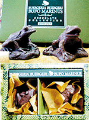
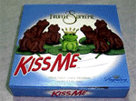
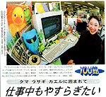
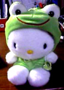

|
本命カエルチョコで愛独占！  【青森発=さい同志記者】本州最北端の青森県でも暖冬小雪の日々が続いております。妻と一緒に日々探求しておりましたところ、たまたまおなかが痛くて入った百貨店でかえるチョコを発見してしまいました。妻は前日に2月14日用のチョコは購入してしまったのですが、感動のあまり購入しました。【横浜発=かえる将軍同志記者】妻からこんなすばらしいチョコをもらいました。しかしカエラーの私としてはこれは食えません。どうしようか困っています。 【東京発=けろろん同志記者】カエラーな彼に送るにふさわしい、カエルチョコ二種を発見しました。
その１：リアル路線のカエルチョコ。阿形（ミルクチョコ）・吽形（ビターチョコ）の二匹一組で、なにやら「ZOOLOGY」なるシリーズの一つのようです。ソニープラザ吉祥寺店で購入。
 その２：王様（女王様？）カエルパッケージチョコ。カナダ製。パッケージ表面のカエルがとてもユーモラスかつ愛らしい。「Kiss me」なる商品名も意味深かな？カーニバルという食料品などを扱っているお店で購入。画像解説：外箱全景。なぜか真ん中のカエル以外はチョコガエルになっている。内部。2_1のわけはどうやらここにあるらしい。真ん中のチョコのみ、カエル色のホイルで包まれていた。 【千葉発=祐三子同志記者】カエルチョコを発見しました。「ＺＯＯＬＯＧＹ」というメーカーのチョコレートで、動物もののチョコを出しています。カエルのほかには、ゾウ、ライオン、ゴリラ、ブタなどありました。かわいいです。絶対食べられません！！！ 【福岡発=i-ueno同志記者】彼女から少し早めのバレンタインチョコをもらいました。写真を見ていただければわかりますが、まさにカエル芸術のごとき造形の、弐匹のカエルでございます。 カエルチョコ食う男はヘビ男！ただちに離縁を！【全国かえる奉賛会】通常型の本命チョコを購入しているカエラーな女性たちは、イマスグに、その本命チョコを義理チョコに格下げして、どーでもいい相手にくれてやり、本命の彼氏や夫には、カエルチョコを渡すべく、店に走ろう！
そして、問題は、贈ったあとだ。各地の記者が吐露しているように、真にカエラーな男は、『カエルチョコが食べれない』というジレンマに陥るのである。もしも、君の贈った相手が『うわあああ。ありがとう』と礼は言うが、そのままカエルチョコをむしゃむしゃ食べるようなヘビ男であった場合は、即刻、お別れしよう。結婚していたら、ただちに離婚だ(笑)
 一般紙がカエル報道！【横浜発=横浜のおかえる同志記者】「職場をかえるで埋め尽くせ！ かえるに囲まれ仕事の効率アップ。」2月5日の毎日新聞の夕刊の一面に、職場のデスクに沢山かえるを飾った女の人の写真と記事がありました。最近職場をかえるグッズなどぬいぐるみで飾る社員が急増している、とのことです。我が職場はかえる化が進んでいます。色々なかえるのぬいぐるみ、パソコンの壁紙、マウスパッドもかえるです（市場でモローストラップを購入した人もいます）。職場はいつも笑顔が絶えません。旅行、出張先で買ってくるお土産はかえるグッズ、今は「イズノスケ」が大人気です。今年の社員旅行は伊豆を計画しています。
カエル主義を鼓舞する毎日新聞を読もう！【全国かえる奉賛会】職場をかえるで埋め尽くせ！すごいなー一般紙のカエル新聞化もココまで来るとは！大王の自席も、さりげなくカエルを増やしていった結果。誰にも気づかれないように３０種類ものカエルで埋め尽くされているのである。カエル主義に目覚めた、毎日新聞をカエラーの全力を挙げて、購読しようではないかあ。 幻のカエルキティー発見！【仙台発=ジョゼフィーヌ・クララ妃殿下】ギャルの必須アイテムとなったハローキティーも実はカエルだった？その事実を実証する生産中止となった幻の「ハローキティ変身ぬいぐるみカエル」をゲットしました！とってもお茶目なヌイグルミですね！
【全国かえる奉賛会】キティーも本当はカエルになりたかったのかも知れない。進化の途中でネコのまま不本意にも売れてしまったので、カエルにならない未熟なままの姿を世にさらしているのであろう。
東京にカエルグッズ販売店！【東京発=FROGS同志記者】東京にて「Ｃａｆｅ＆雑貨店『ＦＲＯＧＳ』」=TEL: 03-5729-4399〒152-0035 目黒区自由が丘2-9-10=という店を営業しています。２月３日から、当店のホームページを立ち上げました。「かえる雑貨のオンラインショップ」もやっています。これは便利！月刊誌に「カエル事典」【東京発=近藤KAERU＠KAERU STREET同志記者】MOEというイラストや絵本を扱っている月刊誌に「カエル事典」という16Pのミニブックがついています。ショップやグッズの紹介が中心といったかんじです。是非本屋で発見してみてください。次号が3月3日発売となっていますので、それまでは本屋さんで発見できると思います。
カエル本が買える！かえる書店を準備中！【全国かえる奉賛会】レアなカエル本は、非カエラーにとっては、無関心かもしれないが、われわれカエラーには、大切な書籍だ。すぐれたカエル本を絶版の淵から救出し、世の中の出版物がすべてカエル関係書籍になるように、かえる書店を準備して、カエラーがカエル本をスグ買えるようにするぞおおおおっ！３月くらいにオープンするからねー。訪問８８８８８人目に記念品贈呈！【全国かえる奉賛会】もうじき、恒例のゾロ目８８８８８人目の訪問者に、記念品を贈呈するぞー。８はとびきりに縁起がいい数字なので、カエル詰め合わせでもプレゼントしようかなーっ。該当者は、大王様へのメールwakuro-3@hf.rim.or.jpで自己申告してくれー。投稿採用者に武功カエル徽章を授与！ |
かえる古新聞過去に取り上げた記事を見出し付きで一覧したい人は、ここをクリック◆創刊号を見る◆先週号を見る◆話題の号を見る◆かえる新聞の昔を読む
|
私も入っています。。全国かえる奉賛会
大王様に会うには、このバナーをクリック。ずっと奥に写真館があるぞ。全国かえる奉賛会に入会するには、自分のホームページのどこかに、下の部分を追加するとバナーがリンク付きで表示されるぞ。どんどん入会しましょー |


|